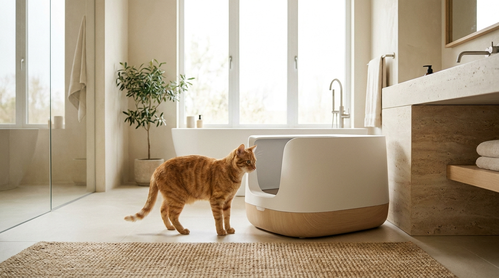

Кошка начала ходить мимо лотка — на ковёр, на кровать, в угол коридора. Первая реакция хозяина: «делает назло». Но кошки не мстят — это доказанный факт. Когда кошка перестаёт пользоваться лотком, она сигнализирует о проблеме: медицинской, поведенческой или о том, что с самим лотком что-то не так. Находим причину и решаем пошагово.
Кошки не способны на месть в человеческом смысле. Месть — это осознанное желание причинить боль в ответ на воспринятую несправедливость, с пониманием причинно-следственной связи «ты сделал X, я делаю Y, чтобы тебе было плохо». Мозг кошки так не работает.
Когда кошка мочится на ваш свитер, это может означать:
В любом из этих случаев «наказание» не только не помогает, но и ухудшает ситуацию: кошка не понимает, за что её ругают, тревога возрастает, проблема усугубляется.
Самая частая медицинская причина — идиопатический цистит кошек (ИЦК) и мочекаменная болезнь (МКБ). Симптомы похожи:
Особо опасна уретральная обструкция у котов — полная закупорка мочеиспускательного канала. Кот заходит в лоток многократно и не может помочиться вообще. Без лечения гибель наступает за 24-72 часа. Это экстренный случай.
Также исключите: артрит (пожилым кошкам больно залезать в лоток с высокими бортами), диарею и заболевания ЖКТ (кошка не успевает добежать), когнитивную дисфункцию у пожилых кошек (дезориентируется, не находит лоток).
Что делать: при любых из перечисленных симптомов — к ветеринару, анализ мочи обязателен. УЗИ мочевого пузыря покажет камни или песок.
Золотое правило кошачьих лотков: количество лотков = количество кошек + 1. В доме с одной кошкой — 2 лотка. С тремя кошками — 4 лотка. Это не блажь: в природе кошки имеют несколько уборных мест и никогда не пользуются одним постоянно.
Расположение критично:
Закрытые лотки с крышкой нравятся хозяевам — запах скапливается внутри. Но многие кошки их не переносят: запах концентрируется именно там, где кошка находится; вход узкий и напоминает ловушку; тревожным кошкам важно видеть пространство вокруг.
Закрытый лоток может подойти кошке, которая предпочитает приватность и не имеет проблем с тревожностью. Но если проблемы начались после появления закрытого лотка — замените на открытый.
Размер лотка: минимум 1,5 длины кошки от носа до основания хвоста. Стандартные лотки из зоомагазинов часто слишком малы для крупных пород — мейн-куны, норвежские лесные, рагдоллы. Используйте пластиковые контейнеры для хранения подходящего размера.
Высота бортов: пожилым кошкам с артритом нужен лоток с низким входом или специальный лоток с вырезом. Высокий борт — больно перешагивать, кошка начинает ходить рядом с лотком, не внутри.
Кошки консервативны в выборе наполнителя. Большинство предпочитают мелкодисперсный слёживающийся (комкующийся) наполнитель без запаха. Исследование Бристольского университета показало, что 73% кошек из предложенных вариантов выбирали неароматизированный мелкий комкующийся наполнитель.
Частые ошибки с наполнителем:
Люди часто недооценивают, насколько кошки требовательны к чистоте туалета. Кошка с хорошим обонянием чувствует запах значительно раньше, чем человек. Реальный стандарт ухода:
Если в доме несколько кошек, и они поделили территорию, слабая или подчинённая кошка может избегать общего лотка — доминирующая кошка его «занимает» или блокирует доступ. Лотки на нейтральной территории, в разных частях дома, решают эту проблему.
Метка (маркировка) и обычное мочеиспускание — разные вещи, и путать их нельзя, потому что причины и решения различаются.
Метка:
Нецелевое мочеиспускание:
Стерилизация существенно снижает (но не всегда устраняет) метку. При метке у стерилизованного животного ищите источник стресса: новый питомец, кошки за окном, переезд, конфликты между кошками в доме.
Многокошачий дом — источник скрытого стресса. Кошки — территориальные полусолитарные животные, и совместное проживание нескольких кошек всегда требует управления. Признаки хронического конфликта:
Решение: увеличить количество ресурсов — лотков, мисок, лежанок, когтеточек. Разделить пространство зонами. Феромоновые диффузоры Feliway MultiCat доказанно снижают межкошачью агрессию в доме. В тяжёлых случаях — работа с ветеринарным зоопсихологом.
Запах мочи на запрещённом месте — приглашение вернуться туда снова. Обычные моющие средства и даже хлорка не разрушают маркирующие молекулы — феромоны и мочевину.
Работают только энзимные очистители — они расщепляют органику на молекулярном уровне. Хорошо зарекомендовавшиеся в РФ: Urine Off, Биодор, Simple Solution. Алгоритм:
После того как место отмыто — закрыть доступ к нему (поставить мебель, постелить коврик) или поставить там миску с едой: кошки не метят там, где едят.
Если причина — стресс или тревожность, одной перестановкой лотков не обойтись. Кошачий стресс — это не абстракция, а физиологический процесс с повышением кортизола, который влияет на поведение, иммунитет и работу мочевого пузыря. Идиопатический цистит у кошек (ИЦК) — это во многих случаях стресс-индуцированное заболевание, а не инфекция.
Феромоновые диффузоры: Feliway Classic имитирует «маркировочные» феромоны кошки, которые она оставляет, когда трётся щёками о поверхности (это «я здесь в безопасности» — сигнал). Клинические исследования показывают снижение стрессового поведения, включая неправильное мочеиспускание, в 72% случаев. Диффузор вставляется в розетку в комнате, где кошка проводит больше всего времени. Эффект нарастает в течение 1-2 недель. Это безопасно, без рецепта и хорошо сочетается с другими методами коррекции.
Pheromone-содержащие спреи (Feliway spray) можно наносить на «аварийные» места после уборки — это помогает снизить вероятность возврата кошки туда.
При выраженной тревожности, страхах и хроническом стрессе ветеринарный врач может назначить медикаментозную поддержку: габапентин (краткосрочно при остром стрессе), флуоксетин или кломипрамин (для долгосрочной терапии тревожности). Это не «таблетки для характера» — это полноценное лечение, которое меняет нейрохимический фон и позволяет кошке вернуться к нормальному поведению.
Разные жизненные периоды требуют разных лотков. Это часто упускается из виду.
Котята до 4-5 месяцев имеют небольшой контроль мочевого пузыря и не всегда успевают добраться до лотка. Для них критически важно: лоток с очень низким бортом (2-3 см) или специальный «котёночный» лоток; лоток в каждой комнате, где котёнок бывает; максимальная близость к месту отдыха и игр.
Пожилые кошки (10+) нередко начинают «промахиваться» из-за артрита — больно поднимать ногу через высокий борт. Решение простое: лоток с низким входом или пластиковый контейнер с вырезом. Кошка, которая перестала ходить в лоток в 12 лет без других симптомов, скорее всего испытывает боль при входе — это артрит, а не «вредность».
Кошки с хирургическими швами или бандажами временно могут нуждаться в лотке без наполнителя или с очень лёгким, рассыпчатым наполнителем — чтобы ничего не прилипало к ране. Уточните у ветеринара.
Если вы прошли все шаги, исключили медицину, скорректировали лоток и условия — а кошка продолжает ходить мимо, это сигнал для консультации с ветеринарным зоопсихологом или специалистом по поведению кошек (сертификация IAABC или аналогичная). В России такие специалисты есть: работают онлайн, принимают с видеозаписями поведения питомца.
Зоопсихолог оценит: динамику в доме, отношения между животными, среду и её соответствие потребностям кошки, разработает поведенческий план коррекции. Поведенческая терапия решает случаи, которые кажутся «безнадёжными» — часто за 3-6 недель структурированной работы.